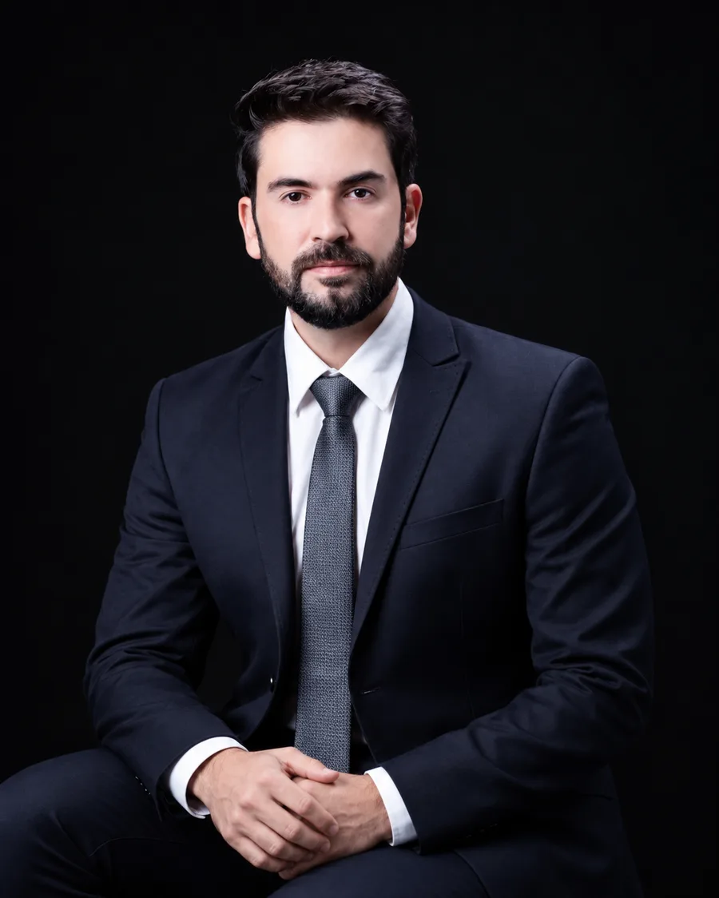

Médico | CRM-PR 55063
O tratamento precisa fazer sentido.
Atendimento médico em saúde mental de adultos. Teleconsulta para todo o Brasil, presencial em Mangueirinha, PR.
Consulta de 1h a 1h30. Ao final, você recebe um registro escrito do raciocínio da consulta: o que compreendemos até aqui, o que ainda está em aberto, as decisões tomadas e o que será acompanhado até o retorno.

A consulta
Como funciona a consulta
História e contexto
A consulta começa por entender o que mudou, desde quando, em que circunstâncias e o que você já tentou fazer a respeito. Depois, investigamos o que pode estar ligado a isso: sono, trabalho, relações, saúde física, exames e medicações em uso.
Hipóteses
Nem toda conclusão precisa aparecer na primeira consulta. Quando existe incerteza, ela deve ser dita com clareza: o que parece mais provável, o que ainda não sabemos e o que precisamos observar.
Decisões
A conduta vem depois dessa organização. Pode ser iniciar, manter, ajustar ou retirar uma medicação, solicitar investigação, indicar outra forma de tratamento ou simplesmente observar antes de intervir.
Acompanhamento
O acompanhamento permite avaliar resposta, efeitos adversos, mudanças no funcionamento e informações novas. Uma hipótese ou uma decisão pode ser revista quando o quadro muda.
A consulta tem duração de 1h a 1h30, o que permite reconstruir a história com tempo e organizar as decisões sem pressa.
O registro
A página que você leva
Todo atendimento termina com um registro de uma página, entregue em mãos ou enviado por e-mail. Ele organiza o raciocínio da consulta em linguagem clara.
Você sai sabendo o que está sendo feito, por que foi decidido e o que ainda precisa ser observado — registrado, não apenas dito. Se trocar de médico, esse documento vai com você.
O que entendemos até aqui
O que ainda está em aberto
O que decidimos e por quê
O que observar até o retorno
Quando reavaliar / procurar antes
Quando procurar
Quando uma avaliação ajuda
- sintomas que permanecem apesar de tratamentos anteriores
- um tratamento que foi se acumulando e precisa ser reorganizado
- dúvida sobre manter, ajustar ou retirar uma medicação
- humor, sono ou concentração que mudaram e não voltaram
- diagnósticos diferentes ao longo dos anos, sem um fio que os ligue
Nenhum desses itens é diagnóstico. São motivos comuns para procurar.
Sobre
Sou médico e minha prática é dedicada à saúde mental de adultos.
Atuo também no CAPS de Mangueirinha, no serviço público, acompanhando pessoas com histórias clínicas de longa duração. Nesses percursos, sintomas, hipóteses diagnósticas, tratamentos e mudanças de vida podem se acumular ao longo dos anos.
Reconstituir essa história e distinguir o que ainda faz sentido é parte importante do trabalho que realizo — e influencia a forma como conduzo a consulta particular.
Médico psicoterapeuta, pós-graduado em Psiquiatria.
Atendimento
Onde atendo
Teleconsulta
Todo o Brasil, por videochamada. Mesma duração, mesma avaliação, mesmo documento no final. É a modalidade da maior parte dos atendimentos, inclusive primeira consulta.
Perguntas
Qual é o valor da consulta?
R$ 550,00 por consulta de 1h a 1h30, com o registro escrito ao final. Aceito Pix, cartão e transferência.
Você atende convênio?
Não. Emito recibo para reembolso, e ele segue as regras da sua operadora.
Você é psiquiatra?
Não tenho título de especialista (RQE, Registro de Qualificação de Especialista) em Psiquiatria. Sou médico, com prática dedicada à saúde mental de adultos, psicoterapeuta e pós-graduado em Psiquiatria. Se você procura especificamente um especialista com RQE, vale saber disso antes de agendar.
Preciso levar alguma coisa?
Se tiver: a lista das medicações em uso com as doses, receitas e exames recentes. Não precisa organizar a história antes — isso é parte da consulta.
A consulta sempre termina com uma receita?
Não. Às vezes a decisão é observar antes de mudar qualquer coisa, ou investigar antes de tratar.
Posso fazer tudo online?
Sim, inclusive a primeira consulta. Se em algum momento for necessário exame presencial, eu digo na hora.
De quanto em quanto tempo são os retornos?
Depende da fase do tratamento. O intervalo é definido no final de cada consulta e fica registrado no documento.
Agendamento
Como agendar
Você manda uma mensagem no WhatsApp dizendo se prefere teleconsulta ou presencial. Respondo em até 24 horas com os horários disponíveis. A consulta é confirmada depois que você escolhe o horário e a forma de pagamento.
Teleconsulta para todo o Brasil · Presencial em Mangueirinha, PR
Agendar consulta